RNA_Cormotif_Comp_Species_Ensembl
2026-01-28
Last updated: 2026-02-18
Checks: 7 0
Knit directory: CrossSpecies_CM_Diff_RNA/
This reproducible R Markdown analysis was created with workflowr (version 1.7.2). The Checks tab describes the reproducibility checks that were applied when the results were created. The Past versions tab lists the development history.
Great! Since the R Markdown file has been committed to the Git repository, you know the exact version of the code that produced these results.
Great job! The global environment was empty. Objects defined in the global environment can affect the analysis in your R Markdown file in unknown ways. For reproduciblity it’s best to always run the code in an empty environment.
The command set.seed(20251129) was run prior to running
the code in the R Markdown file. Setting a seed ensures that any results
that rely on randomness, e.g. subsampling or permutations, are
reproducible.
Great job! Recording the operating system, R version, and package versions is critical for reproducibility.
Nice! There were no cached chunks for this analysis, so you can be confident that you successfully produced the results during this run.
Great job! Using relative paths to the files within your workflowr project makes it easier to run your code on other machines.
Great! You are using Git for version control. Tracking code development and connecting the code version to the results is critical for reproducibility.
The results in this page were generated with repository version 8e92475. See the Past versions tab to see a history of the changes made to the R Markdown and HTML files.
Note that you need to be careful to ensure that all relevant files for
the analysis have been committed to Git prior to generating the results
(you can use wflow_publish or
wflow_git_commit). workflowr only checks the R Markdown
file, but you know if there are other scripts or data files that it
depends on. Below is the status of the Git repository when the results
were generated:
Ignored files:
Ignored: .Rhistory
Ignored: .Rproj.user/
Ignored: analysis/figure/
Ignored: data/
Unstaged changes:
Modified: analysis/index.Rmd
Note that any generated files, e.g. HTML, png, CSS, etc., are not included in this status report because it is ok for generated content to have uncommitted changes.
These are the previous versions of the repository in which changes were
made to the R Markdown
(analysis/RNA_Cormotif_Comp_Species_Ensembl.Rmd) and HTML
(docs/RNA_Cormotif_Comp_Species_Ensembl.html) files. If
you’ve configured a remote Git repository (see
?wflow_git_remote), click on the hyperlinks in the table
below to view the files as they were in that past version.
| File | Version | Author | Date | Message |
|---|---|---|---|---|
| Rmd | 8e92475 | John D. Hurley | 2026-02-18 | Adding functions from DGE |
| Rmd | ad16973 | John D. Hurley | 2026-02-18 | error in include statment |
| Rmd | d593740 | John D. Hurley | 2026-02-18 | Typo |
| Rmd | 1d6a7ee | John D. Hurley | 2026-02-18 | Moving Clust FC to CorMotif |
| Rmd | b8dfde3 | John D. Hurley | 2026-02-18 | MovedClustersToCormotif |
| Rmd | c85837b | John D. Hurley | 2026-02-18 | SiteUpDate_CorrelationHeatMap |
| html | 3956def | John D. Hurley | 2026-01-28 | Build site. |
| Rmd | 07967c8 | John D. Hurley | 2026-01-28 | Needed to run Cormotif code |
| Rmd | e6624d7 | John D. Hurley | 2026-01-28 | Duplicate Block names |
| Rmd | 6b3f4af | John D. Hurley | 2026-01-28 | website edit |
| Rmd | 6c3cce3 | John D. Hurley | 2026-01-28 | Cormotif Species |
knitr::opts_chunk$set(echo = TRUE,warning=FALSE,message=FALSE, dev=c("png","pdf"))####Library Loading####
library("edgeR")
library("ggplot2")
library("tibble")
library("dplyr")
library("ggrepel")
library("readr")
library("org.Hs.eg.db")
library("AnnotationDbi")
library("pheatmap")
library("tidyverse")
library("workflowr")
library("RUVSeq")
library("SummarizedExperiment")
library("readxl")
library("ggfortify")
library("ComplexHeatmap")
# BiocManager::install("SummarizedExperiment")
RNA_fc_df <- readRDS("data/Raw_Data/RNA_fc_df.RDS")
RNA_Metadata <- readRDS("data/Raw_Data/RNA_Metadata.RDS")
ann_colors <- readRDS("data/QC/ann_colors.RDS")
RNA_Metadata_No4 <- readRDS("data/QC/RNA_Metatdata_No4.RDS")
Filt_RMG0_RNA_fc_NoD4 <- readRDS("data/QC/Filt_RMG0_RNA_fc_NoD4.RDS")
Filt_RMG0_RNA_log2cpm_NoD4 <- readRDS("data/QC/Filt_RMG0_RNA_log2cpm_NoD4.RDS")
ann_colors_No4 <- readRDS("data/QC/ann_colors_no4.RDS")
Filt_RMG0_RNA_fc_NoD4_NoRep <- readRDS("data/Cormotif/Filt_RMG0_RNA_fc_NoD4_NoRep.RDS")
Filt_RMG0_RNA_log2cpm_NoD4_NoRep <- readRDS("data/Cormotif/Filt_RMG0_RNA_log2cpm_NoD4_NoRep.RDS")
TopTable_RNA_All <- readRDS("data/TopTable_RNA_all.RDS")
clust1_RNA <- readRDS("data/Cormotif/Species/clust1_RNA_Species.RDS")
clust2_RNA <- readRDS("data/Cormotif/Species/clust2_RNA_Species.RDS")
clust3_RNA <- readRDS("data/Cormotif/Species/clust3_RNA_Species.RDS")
clust4_RNA <- readRDS("data/Cormotif/Species/clust4_RNA_Species.RDS")check_overlap <- function(list_of_lists) {
# create empty list to store results
overlap_results <- list()
# loop over each cluster
for (i in seq_along(list_of_lists)) {
cluster_name <- names(list_of_lists)[i]
genes_i <- list_of_lists[[i]]
# compare to all other clusters
overlaps <- sapply(seq_along(list_of_lists), function(j) {
if (i == j) return(NA) # skip self
genes_j <- list_of_lists[[j]]
length(intersect(genes_i, genes_j)) # count of overlapping genes
})
names(overlaps) <- names(list_of_lists)
overlap_results[[cluster_name]] <- overlaps
}
return(overlap_results)
}Filt_RMG0_RNA_log2cpm_NoD4_NoRep <- Filt_RMG0_RNA_log2cpm_NoD4 %>%
as.data.frame() %>% # convert to data frame
dplyr::select(-contains("R")) %>% # remove columns containing "R"
as.matrix() # convert back to matrix
RNA_Metadata_NoD4_NoRep <- RNA_Metadata_No4 %>%
dplyr::filter(!grepl("R", Individual))
# saveRDS(Filt_RMG0_RNA_log2cpm_NoD4_NoRep,"data/Cormotif/Filt_RMG0_RNA_log2cpm_NoD4_NoRep.RDS")
# saveRDS(RNA_Metadata_NoD4_NoRep,"data/Cormotif/RNA_Metadata_NoD4_NoRep.RDS")# groupid <- c(rep(1:5,7),rep(6:10,7))
# compid_Cond1 <- c(1,2,3,4,5)
# compid_Cond2 <- c(6,7,8,9,10)
# compid <- cbind(compid_Cond1,compid_Cond2)
#
# #Model Fitting
#
# set.seed(8)
# motif.fitted<-cormotiffit(exprs = Filt_RMG0_RNA_log2cpm_NoD4_NoRep,
# groupid = groupid,
# compid = compid,
# K=1:10,
# max.iter = 3000,
# runtype = "logCPM")
#
#
# saveRDS(motif.fitted,"data/Cormotif/Species/cormotif_RNA_seed8_k1_10_HC_Day_emmaCode.RDS")
motif.fitted <- readRDS("data/Cormotif/Species/cormotif_RNA_seed8_k1_10_HC_Day_emmaCode.RDS")
plotIC(motif.fitted)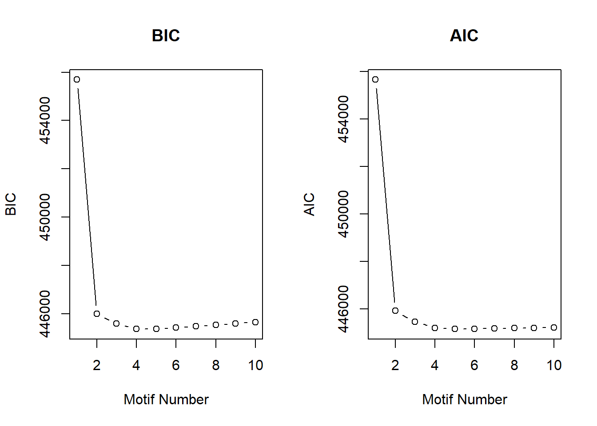
| Version | Author | Date |
|---|---|---|
| 3956def | John D. Hurley | 2026-01-28 |
motif.fitted$bic K bic
[1,] 1 455689.5
[2,] 2 445999.6
[3,] 3 445588.4
[4,] 4 445371.9
[5,] 5 445371.9
[6,] 6 445427.1
[7,] 7 445485.9
[8,] 8 445542.1
[9,] 9 445601.4
[10,] 10 445659.0plotMotif(motif.fitted)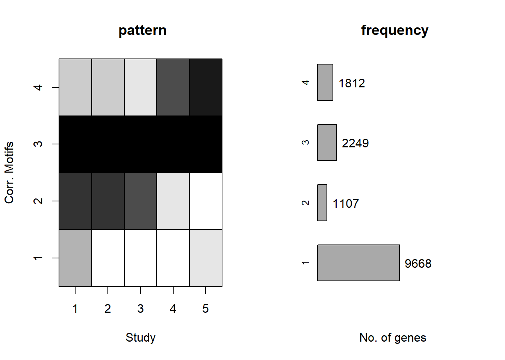
| Version | Author | Date |
|---|---|---|
| 3956def | John D. Hurley | 2026-01-28 |
# Studies Human Day0 - 1. HDay2, 2. HDay5, 3. HDay15, 4. HDay30
# Chimp Day0 - 5. CDay2, 6. CDay5, 7. CDay15, 8. CDay30# Set up Variables
groupid <- c(rep(1:5,7),rep(6:10,7))
compid_Cond1 <- c(1,2,3,4,5)
compid_Cond2 <- c(6,7,8,9,10)
compid <- cbind(compid_Cond1,compid_Cond2)
# Extract motif matrix
motif_matrix <- as.matrix(motif.fitted$bestmotif$motif.q)
# Label rows and columns
rownames(motif_matrix) <- paste0("Motif_", seq_len(nrow(motif_matrix)))
colnames(motif_matrix) <- paste0("C", compid[,1], "_vs_C", compid[,2])
# Convert to tidy format
motif_df <- as.data.frame(motif_matrix) %>%
mutate(Motif = rownames(.)) %>%
pivot_longer(-Motif, names_to = "Comparison", values_to = "Probability")
# Reorder motifs 1–11
motif_df$Motif <- factor(motif_df$Motif, levels = paste0("Motif_", 1:4))
motif_df$Comparison <- factor(motif_df$Comparison, levels = c("C1_vs_C6","C2_vs_C7","C3_vs_C8","C4_vs_C9","C5_vs_C10"))
# Plot
ggplot(motif_df, aes(x = Comparison, y = Motif, fill = Probability)) +
geom_tile(color = "white") +
scale_fill_gradient(low = "white", high = "black") +
labs(
title = "CorMotif Motif Activity Across Comparisons \n (no day4) (no replicates) (RowMeans>0) Days Across Species" ,
x = "Comparison (Condition 1 vs Condition 2)",
y = "Motif (1–4)",
fill = "Posterior Probability"
) +
theme_minimal(base_size = 14) +
theme(
axis.text.x = element_text(angle = 45, hjust = 1),
panel.grid = element_blank()
)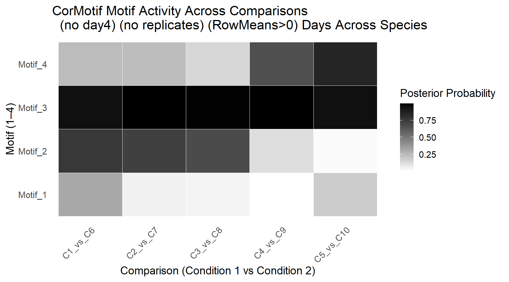
| Version | Author | Date |
|---|---|---|
| 3956def | John D. Hurley | 2026-01-28 |
# Comparison C1 = Human Day0
# Comparison C2 = Human Day2
# Comparison C3 = Human Day5
# Comparison C4 = Human Day15
# Comparison C5 = Human Day30
# Comparison C6 = Chimp Day0
# Comparison C7 = Chimp Day2
# Comparison C8 = Chimp Day5
# Comparison C9 = Chimp Day15
# Comparison C10 = Chimp Day30motif.fit <- motif.fitted
log2cpm <- Filt_RMG0_RNA_log2cpm_NoD4
#extract the posterior probability that these genes belong to motifs
gene_prob_ppost <- motif.fit$bestmotif$p.post
rownames(gene_prob_ppost) <- rownames(log2cpm)
# saveRDS(gene_prob_ppost,"data/Cormotif/Species/RNA_gene_prob_ppost_Species.RDS")
#assign each gene to a motif with max post prob
assigned_motifs <- apply(gene_prob_ppost, 1, which.max)
max_probs <- apply(gene_prob_ppost, 1, max)
#combine these into a dataframe - motif assigned genes (p.post)
motif_assignment_df <- gene_prob_ppost %>%
as.data.frame() %>%
rownames_to_column("Gene") %>%
mutate(
Assigned_Motif = assigned_motifs[Gene],
Max_Probability = max_probs[Gene]
)
#make some histograms of the unfiltered data from Cormotif p.post
gene_prob_ppost %>%
as.data.frame() %>%
ggplot(., aes(x = V1))+
geom_histogram(bins = 50)+
xlim(0,1)+
ggtitle("Cormtif p.post RNA V1")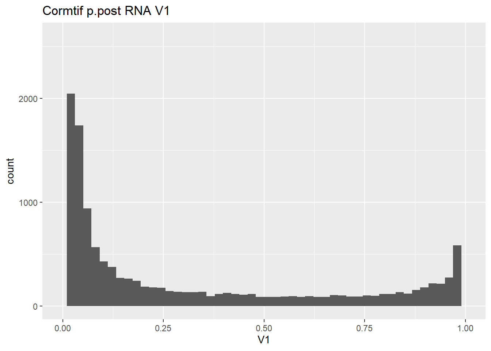
| Version | Author | Date |
|---|---|---|
| 3956def | John D. Hurley | 2026-01-28 |
gene_prob_ppost %>%
as.data.frame() %>%
ggplot(., aes(x = V2))+
geom_histogram(bins = 50)+
xlim(0,1)+
ggtitle("Cormtif p.post RNA V2")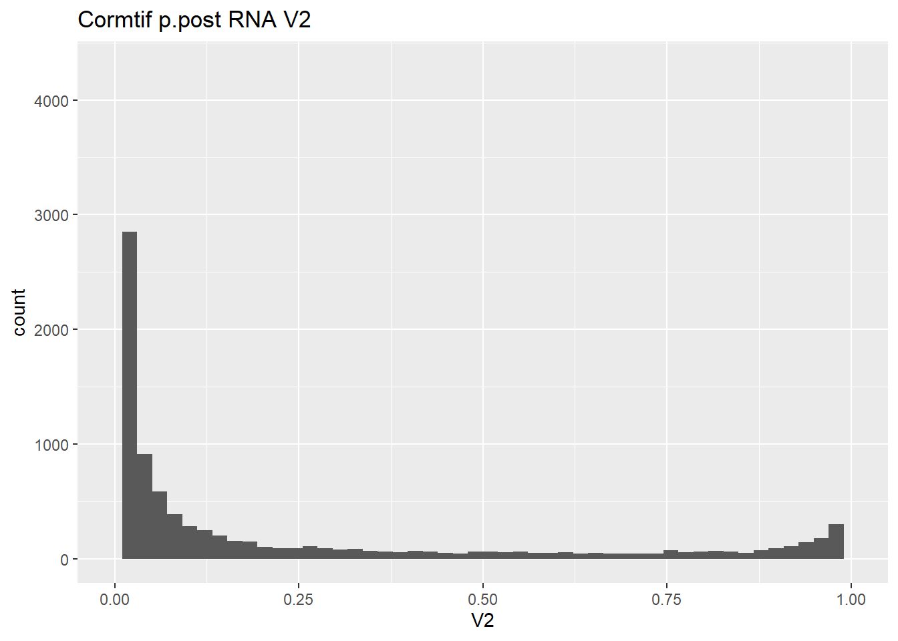
| Version | Author | Date |
|---|---|---|
| 3956def | John D. Hurley | 2026-01-28 |
gene_prob_ppost %>%
as.data.frame() %>%
ggplot(., aes(x = V3))+
geom_histogram(bins = 50)+
xlim(0,1)+
ggtitle("Cormtif p.post RNA V3")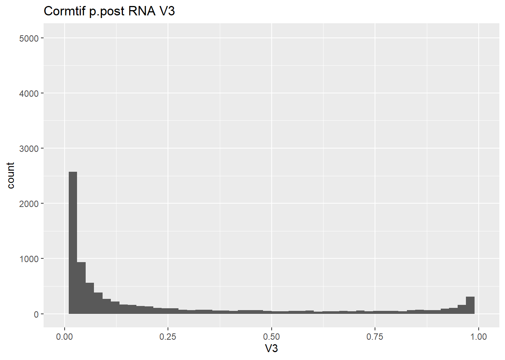
| Version | Author | Date |
|---|---|---|
| 3956def | John D. Hurley | 2026-01-28 |
gene_prob_ppost %>%
as.data.frame() %>%
ggplot(., aes(x = V4))+
geom_histogram(bins = 50)+
xlim(0,1)+
ggtitle("Cormtif p.post RNA V4")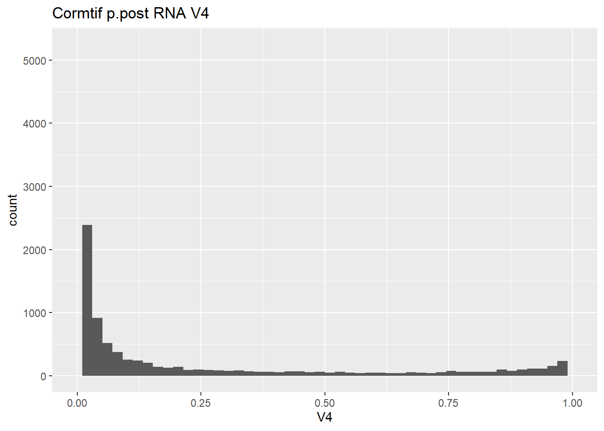
| Version | Author | Date |
|---|---|---|
| 3956def | John D. Hurley | 2026-01-28 |
gene_prob_ppost %>%
as.data.frame() %>%
ggplot(., aes(x = V5))+
geom_histogram(bins = 50)+
xlim(0,1)+
ggtitle("Cormtif p.post RNA V5")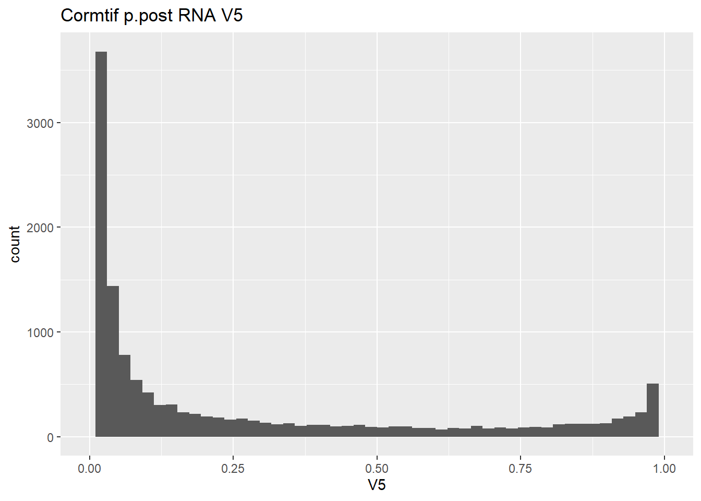
| Version | Author | Date |
|---|---|---|
| 3956def | John D. Hurley | 2026-01-28 |
motif.fit <- motif.fitted
log2cpm <- Filt_RMG0_RNA_log2cpm_NoD4
#extract the cluster likelihood - which DEGs are most likely to be in this cluster
motif_prob <- motif.fit$bestmotif$clustlike
rownames(motif_prob) <- rownames(gene_prob_ppost)
# saveRDS(motif_prob,"data/RNA_motif_prob_Trajectory.RDS")
# motif.fitted$bestmotif$clustlike
clust1_RNA <-
motif_prob %>%
as.data.frame() %>%
filter(V1 > 0.5 & V2 < 0.5 & V3 < 0.5 & V4 < 0.5) %>%
rownames()
print("clust1_RNA")[1] "clust1_RNA"length(clust1_RNA)[1] 10473clust2_RNA <-
motif_prob %>%
as.data.frame() %>%
filter(V1 < 0.5 & V2 > 0.5 & V3 < 0.5 & V4 < 0.5) %>%
rownames()
print("clust2_RNA")[1] "clust2_RNA"length(clust2_RNA)[1] 525clust3_RNA <-
motif_prob %>%
as.data.frame() %>%
filter(V1 < 0.5 & V2 < 0.5 & V3 > 0.5 & V4) %>%
rownames()
print("clust3_RNA")[1] "clust3_RNA"length(clust3_RNA)[1] 2129clust4_RNA <-
motif_prob %>%
as.data.frame() %>%
filter(V1 < 0.5 & V2 < 0.5 & V3 < 0.5 & V4 > 0.5) %>%
rownames()
print("clust4_RNA")[1] "clust4_RNA"length(clust4_RNA)[1] 933clust_names_list <- list(
clust1_RNA,
clust2_RNA,
clust3_RNA,
clust4_RNA
)
names(clust_names_list) <- paste0("clust", 1:4)
print(overlap_matirx <- check_overlap(clust_names_list))$clust1
clust1 clust2 clust3 clust4
NA 0 0 0
$clust2
clust1 clust2 clust3 clust4
0 NA 0 0
$clust3
clust1 clust2 clust3 clust4
0 0 NA 0
$clust4
clust1 clust2 clust3 clust4
0 0 0 NA TopTable_RNA_All$AbsFC <- abs(TopTable_RNA_All$logFC)
cluster_names <- c("clust1_RNA","clust2_RNA","clust3_RNA","clust4_RNA")cluster_lists <- list(
clust1_RNA = clust1_RNA,
clust2_RNA = clust2_RNA,
clust3_RNA = clust3_RNA,
clust4_RNA = clust4_RNA
)
cluster_plots <- lapply(names(cluster_lists), function(clust_name) {
plot_cluster_fc(cluster_lists[[clust_name]], clust_name, TopTable_RNA_All)
})clust1_RNA : 52365 rows, 10473 unique genes
clust2_RNA : 2625 rows, 525 unique genes
clust3_RNA : 10645 rows, 2129 unique genes
clust4_RNA : 4665 rows, 933 unique genesnames(cluster_plots) <- names(cluster_lists)
for (p in cluster_plots) print(p)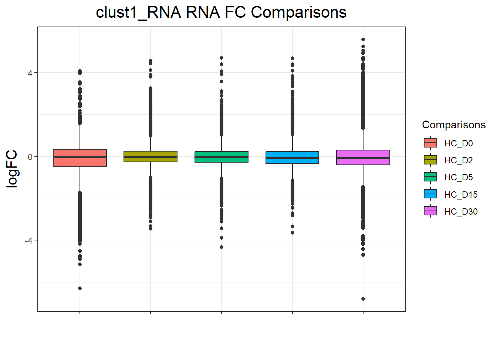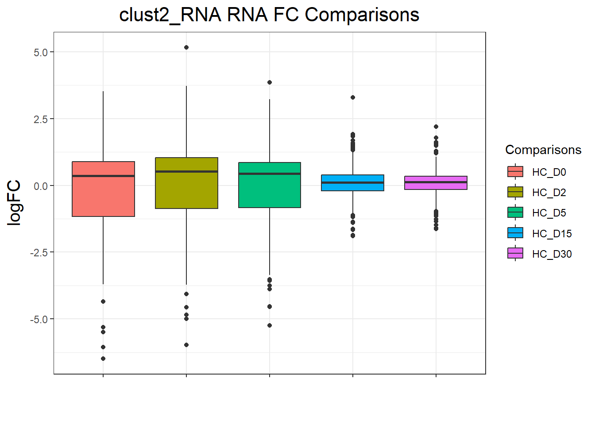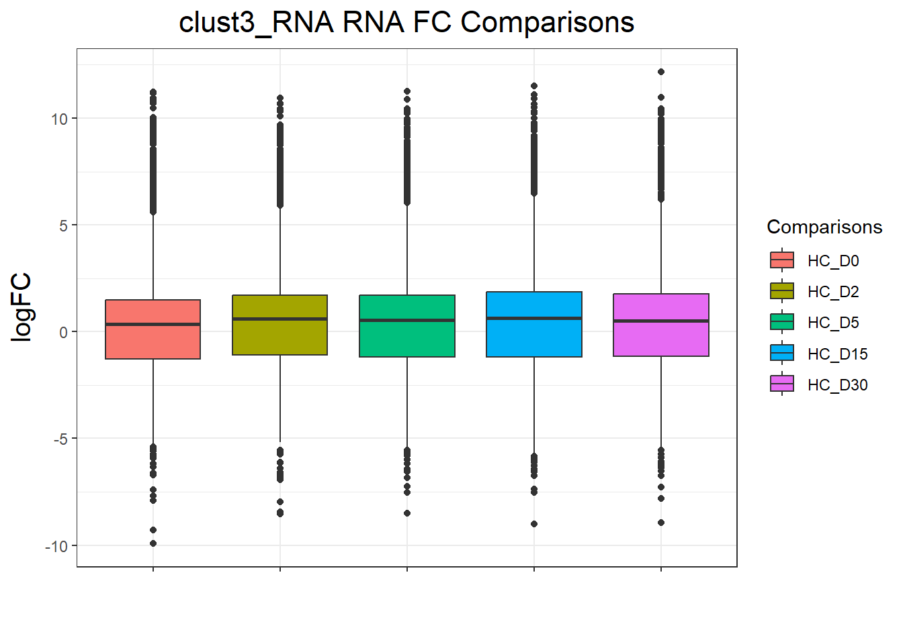
cluster_lists <- list(
clust1_RNA = clust1_RNA,
clust2_RNA = clust2_RNA,
clust3_RNA = clust3_RNA,
clust4_RNA = clust4_RNA
)
cluster_plots <- lapply(names(cluster_lists), function(clust_name) {
plot_cluster_absfc(cluster_lists[[clust_name]], clust_name, TopTable_RNA_All)
})clust1_RNA : 52365 rows, 10473 unique genes
clust2_RNA : 2625 rows, 525 unique genes
clust3_RNA : 10645 rows, 2129 unique genes
clust4_RNA : 4665 rows, 933 unique genesnames(cluster_plots) <- names(cluster_lists)
for (p in cluster_plots) print(p)
 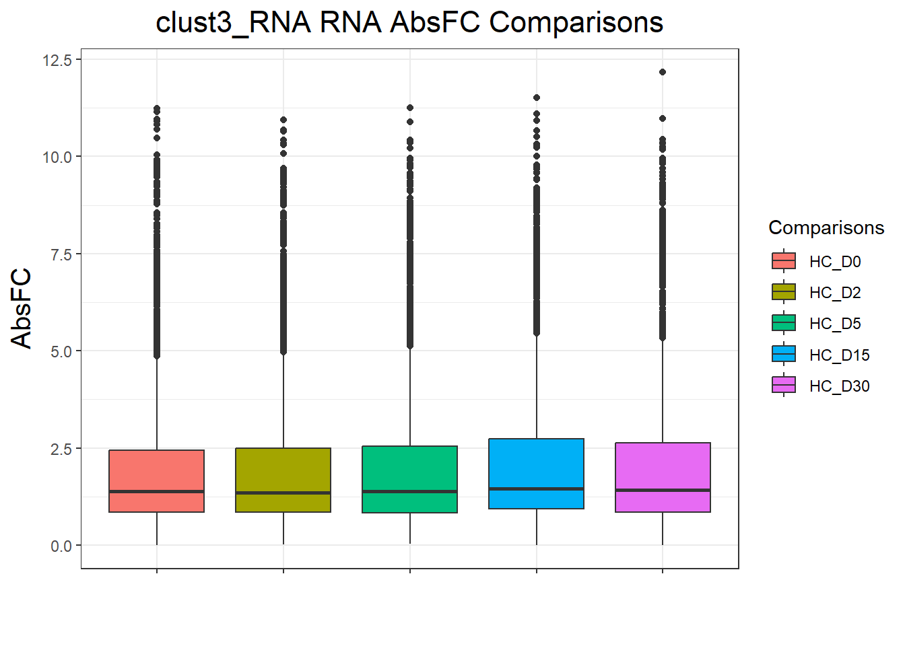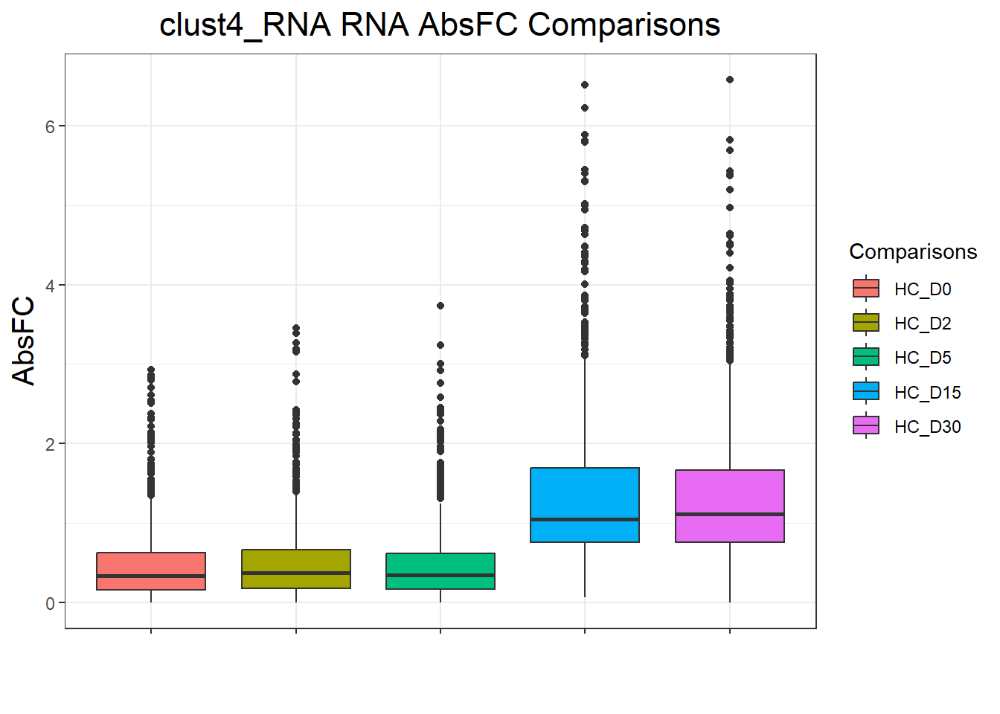
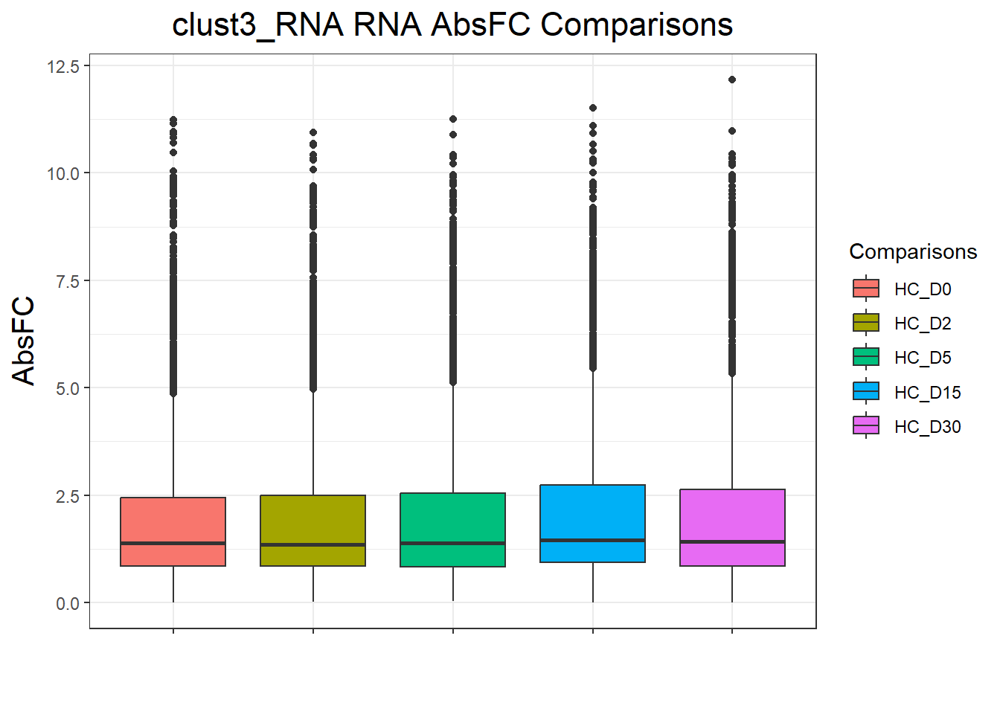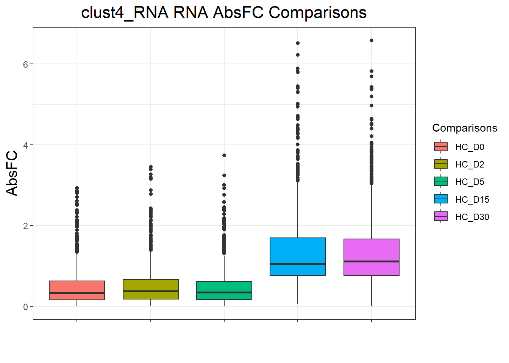
# git -> commit all changes
# git -> push
# wflow_publish("analysis/RNA_Cormotif_Comp_Species_Ensembl.Rmd")
sessionInfo()R version 4.5.1 (2025-06-13 ucrt)
Platform: x86_64-w64-mingw32/x64
Running under: Windows 11 x64 (build 26100)
Matrix products: default
LAPACK version 3.12.1
locale:
[1] LC_COLLATE=English_United States.utf8
[2] LC_CTYPE=English_United States.utf8
[3] LC_MONETARY=English_United States.utf8
[4] LC_NUMERIC=C
[5] LC_TIME=English_United States.utf8
time zone: America/Chicago
tzcode source: internal
attached base packages:
[1] grid stats4 stats graphics grDevices utils datasets
[8] methods base
other attached packages:
[1] ComplexHeatmap_2.24.1 ggfortify_0.4.19
[3] readxl_1.4.5 RUVSeq_1.42.0
[5] EDASeq_2.42.0 ShortRead_1.66.0
[7] GenomicAlignments_1.44.0 SummarizedExperiment_1.38.1
[9] MatrixGenerics_1.20.0 matrixStats_1.5.0
[11] Rsamtools_2.24.0 GenomicRanges_1.60.0
[13] Biostrings_2.76.0 GenomeInfoDb_1.44.3
[15] XVector_0.48.0 BiocParallel_1.42.1
[17] lubridate_1.9.5 forcats_1.0.1
[19] stringr_1.6.0 purrr_1.2.1
[21] tidyr_1.3.2 tidyverse_2.0.0
[23] pheatmap_1.0.13 org.Hs.eg.db_3.21.0
[25] AnnotationDbi_1.70.0 IRanges_2.42.0
[27] S4Vectors_0.46.0 Biobase_2.68.0
[29] BiocGenerics_0.54.1 generics_0.1.4
[31] readr_2.1.6 ggrepel_0.9.6
[33] dplyr_1.1.4 tibble_3.3.1
[35] ggplot2_4.0.2 edgeR_4.6.3
[37] limma_3.64.3 workflowr_1.7.2
loaded via a namespace (and not attached):
[1] RColorBrewer_1.1-3 shape_1.4.6.1 rstudioapi_0.18.0
[4] jsonlite_2.0.0 magrittr_2.0.4 GenomicFeatures_1.60.0
[7] farver_2.1.2 rmarkdown_2.30 GlobalOptions_0.1.3
[10] BiocIO_1.18.0 fs_1.6.6 vctrs_0.7.1
[13] memoise_2.0.1 RCurl_1.98-1.17 htmltools_0.5.9
[16] S4Arrays_1.8.1 progress_1.2.3 curl_7.0.0
[19] cellranger_1.1.0 SparseArray_1.8.1 sass_0.4.10
[22] bslib_0.10.0 httr2_1.2.2 cachem_1.1.0
[25] whisker_0.4.1 iterators_1.0.14 lifecycle_1.0.5
[28] pkgconfig_2.0.3 Matrix_1.7-4 R6_2.6.1
[31] fastmap_1.2.0 clue_0.3-66 GenomeInfoDbData_1.2.14
[34] digest_0.6.39 colorspace_2.1-2 ps_1.9.1
[37] rprojroot_2.1.1 RSQLite_2.4.5 hwriter_1.3.2.1
[40] labeling_0.4.3 filelock_1.0.3 timechange_0.4.0
[43] httr_1.4.7 abind_1.4-8 compiler_4.5.1
[46] doParallel_1.0.17 bit64_4.6.0-1 withr_3.0.2
[49] S7_0.2.1 DBI_1.2.3 R.utils_2.13.0
[52] biomaRt_2.64.0 MASS_7.3-65 rappdirs_0.3.4
[55] DelayedArray_0.34.1 rjson_0.2.23 tools_4.5.1
[58] otel_0.2.0 httpuv_1.6.16 R.oo_1.27.1
[61] glue_1.8.0 restfulr_0.0.16 callr_3.7.6
[64] promises_1.5.0 getPass_0.2-4 cluster_2.1.8.1
[67] gtable_0.3.6 tzdb_0.5.0 R.methodsS3_1.8.2
[70] hms_1.1.4 xml2_1.5.2 foreach_1.5.2
[73] pillar_1.11.1 later_1.4.5 circlize_0.4.17
[76] BiocFileCache_2.16.2 lattice_0.22-7 aroma.light_3.38.0
[79] rtracklayer_1.68.0 bit_4.6.0 deldir_2.0-4
[82] tidyselect_1.2.1 locfit_1.5-9.12 knitr_1.51
[85] git2r_0.36.2 gridExtra_2.3 xfun_0.56
[88] statmod_1.5.1 stringi_1.8.7 UCSC.utils_1.4.0
[91] yaml_2.3.12 evaluate_1.0.5 codetools_0.2-20
[94] interp_1.1-6 cli_3.6.5 processx_3.8.6
[97] jquerylib_0.1.4 Rcpp_1.1.1 dbplyr_2.5.1
[100] png_0.1-8 XML_3.99-0.20 parallel_4.5.1
[103] blob_1.3.0 prettyunits_1.2.0 latticeExtra_0.6-31
[106] jpeg_0.1-11 bitops_1.0-9 pwalign_1.4.0
[109] scales_1.4.0 crayon_1.5.3 GetoptLong_1.1.0
[112] rlang_1.1.7 KEGGREST_1.48.1